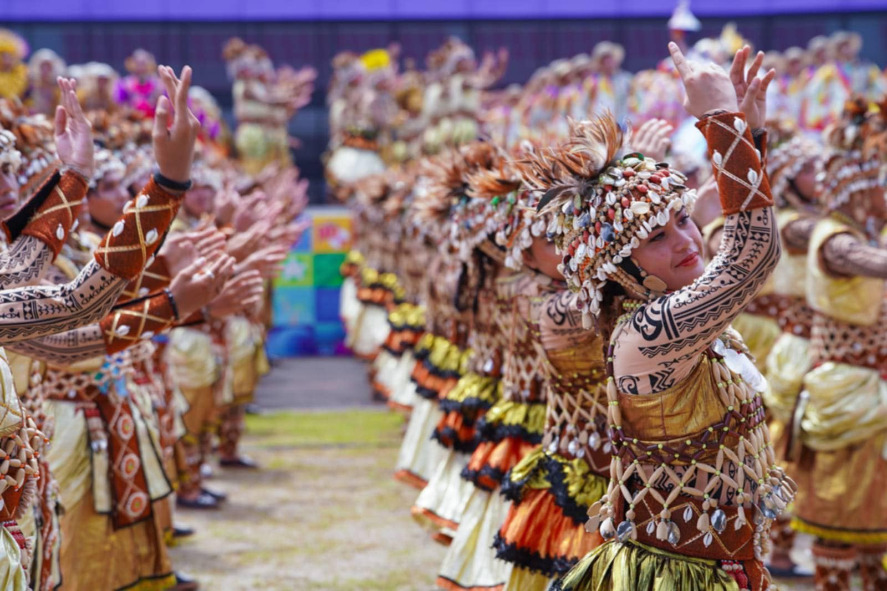

October
Kasanggayahan Festival
Sorsogon's grandest celebration, Kasanggayahan means "togetherness" in Bikol. Held every October to mark the province's founding anniversary, it is a week-long explosion of colour, music, and community pride.
The festival's centrepiece is the street dance competition — elaborately costumed contingents from every municipality perform choreographed numbers depicting local legends, natural wonders, and historic events.
- Grand street parade and float competition
- Municipal cultural dance presentations
- Agricultural and trade expo
- Miss Sorsogon pageant
- Nightly fireworks over the bay
Calendar
Festivals throughout the year
| Festival | Location | Month | Highlights |
|---|---|---|---|
| Kasanggayahan Festival | Sorsogon City | October | Street dance, parade, trade fair |
| Butanding Festival | Donsol | November | Whale shark celebration, eco-tourism launch |
| Pista ng Nayon | All municipalities | Varies | Patron saint fiesta, processions, feasts |
| Sinulog Festival | Various barangays | January | Ritual dances, Santo Niño devotion |
| Pahiyas ng Dagat | Fishing communities | Varies | Sea blessing, decorated fishing boats |
| Semana Santa | All towns | March / April | Holy Week processions, salubong at Easter |
| Flores de Mayo | All towns | May | Daily floral offerings to the Virgin Mary |
| All Saints / Souls Day | All towns | November 1–2 | Cemetery visits, family gatherings, candlelight |